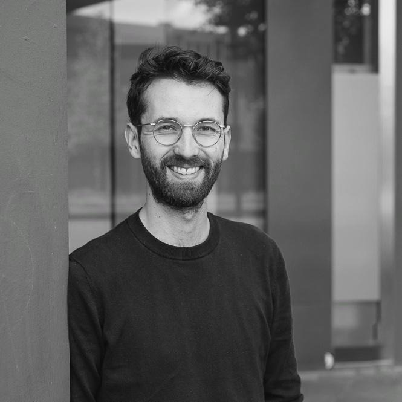

I work at bol.com on causal inference, statistics, measurement, recommendations, and machine learning in the online advertising domain.
Previously, I was assistant professor at Utrecht University, where I founded the ODISSEI Social Data Science team and worked on a broad range of topics in social science, statistics, and computation, such as Bayesian statistics, multilevel generalized linear models, simulation, causal inference, measurement, uncertainty propagation, privacy, synthetic data, and more.
If you want to get in contact, you can use my e-mail address erikjanvankesteren at pm dot me or send me a message on fosstodon.
I have also written some posts and here are some links to stuff I like: pivot to ai, grug, mf website, andrew gelman, quanta magazine, stan mcmc, tidyverse, r4ds, polars, duckdb, astral.